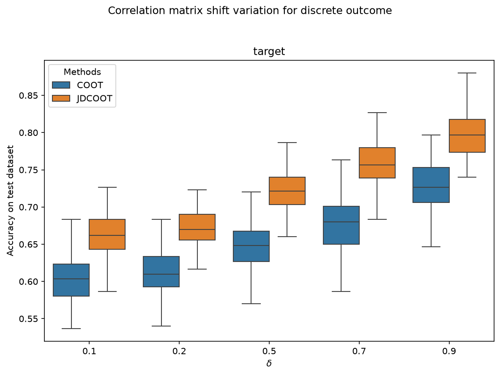
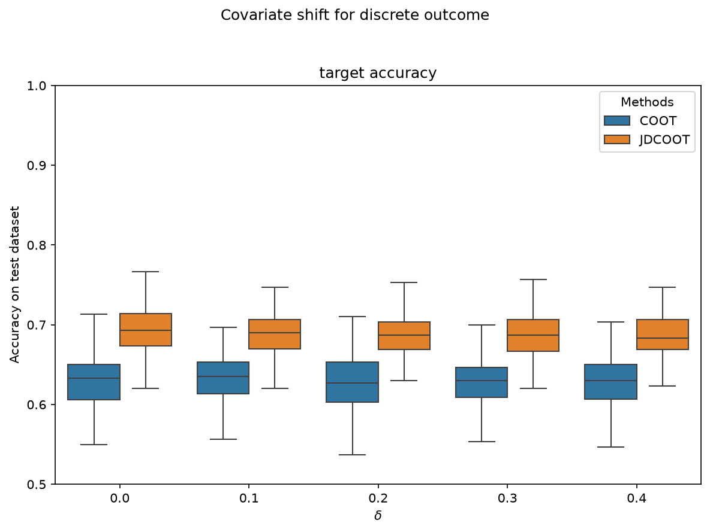
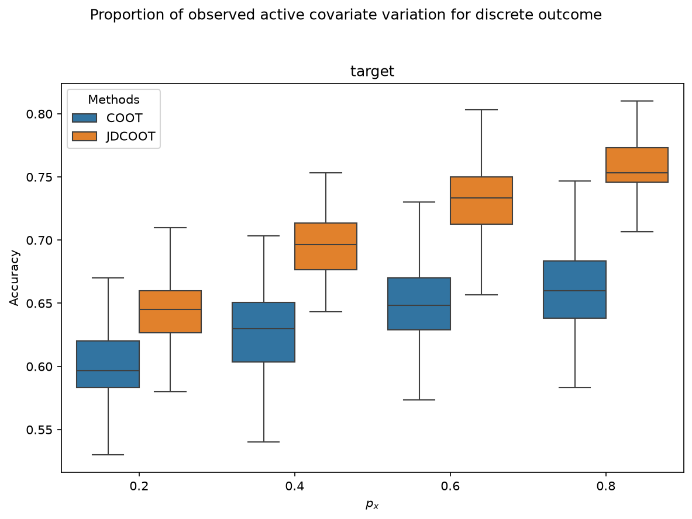
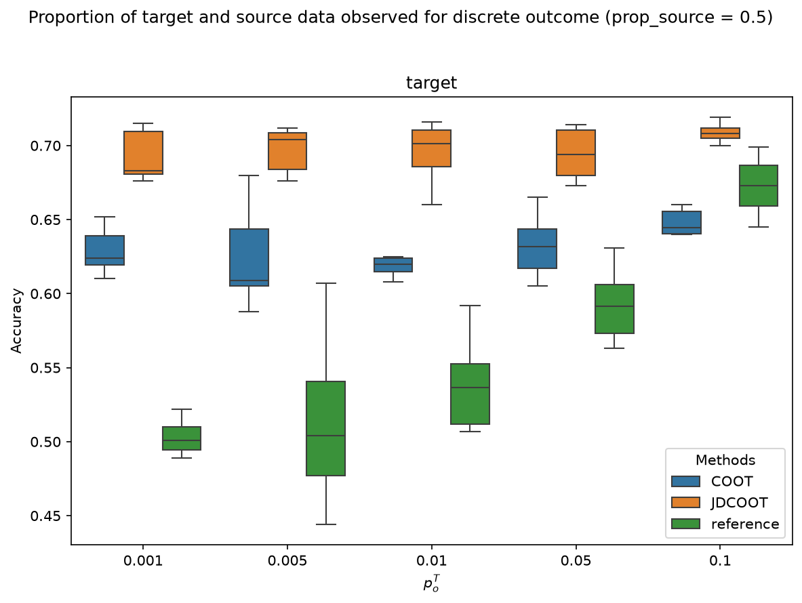
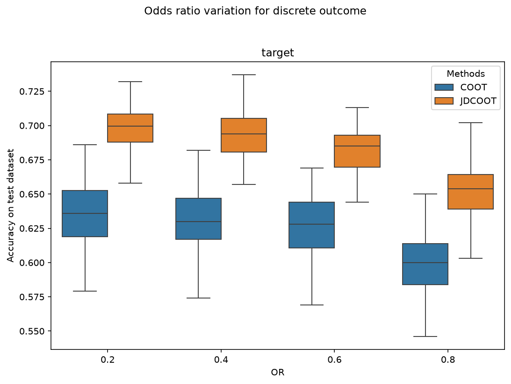
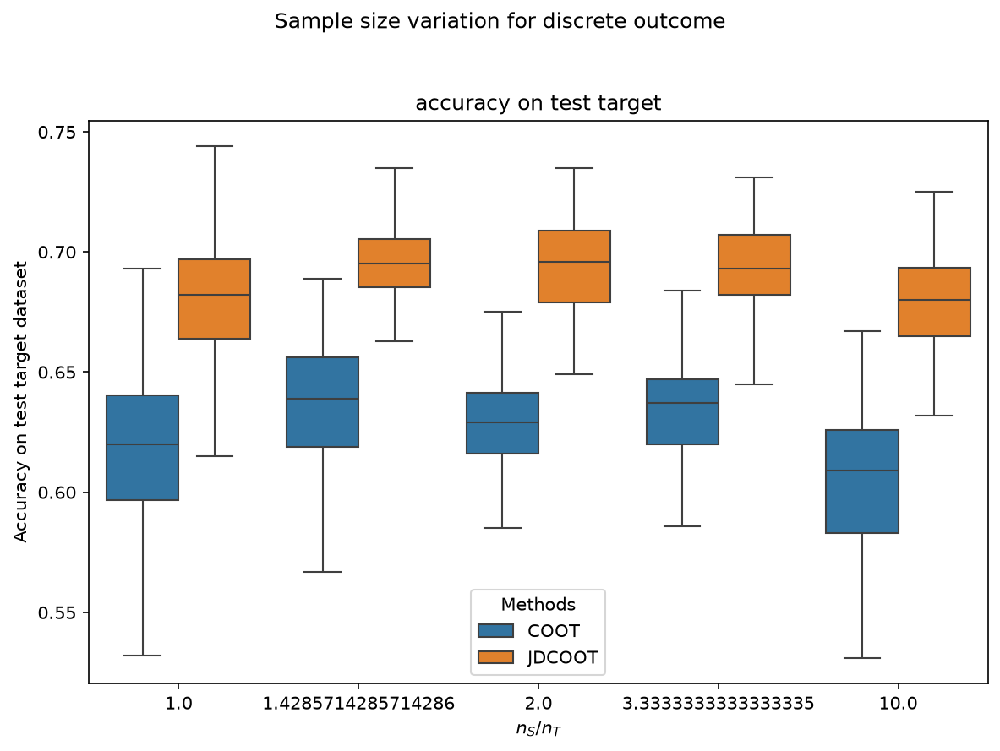
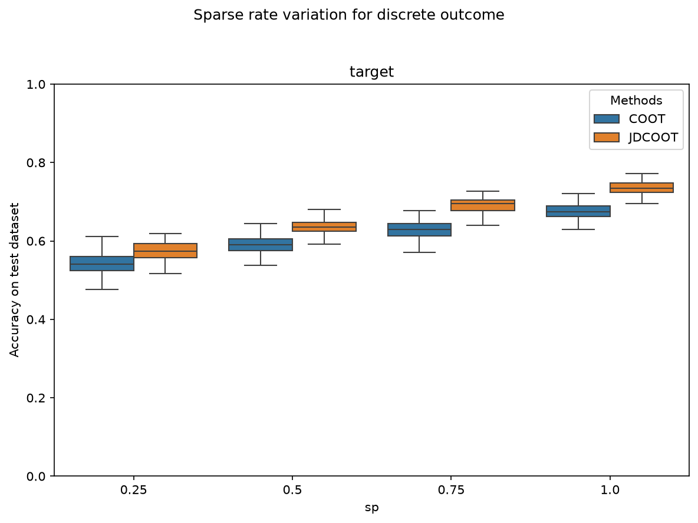

Experiment variations







Static gallery of synthetic experiment variation plots for discrete outcomes. Alpha optimization and continuous-outcome plots are excluded.
The plotting script defines nine non-alpha panels for discrete outcomes; seven were generated from the available results. Two observed-label panels had no matching result rows.






